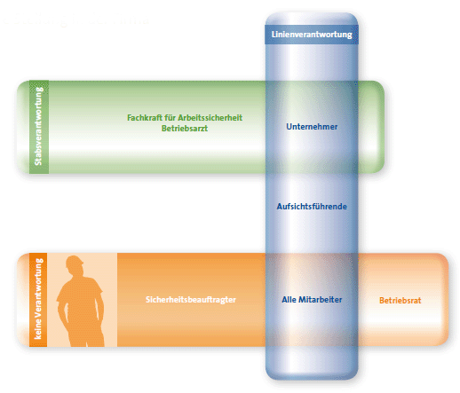

Mit Ihrer Ernennung zum Sicherheitsbeauftragten übernehmen Sie zwar eine sehr verantwortungsvolle Aufgabe, juristisch entstehen Ihnen jedoch keine Nachteile. Die rechtliche Verantwortung für die Arbeitssicherheit und den Gesundheitsschutz liegt beim Unternehmer. So ist es im Arbeitsschutzgesetz (ArbSchG) und im Sozialgesetzbuch (SGB) VII festgelegt.
Der Unternehmer trägt die Verantwortung für das Geschehen am Arbeitsplatz sowie auch für alle Maßnahmen, die Unfälle, Berufskrankheiten und arbeitsbedingte Gesundheitsgefahren verhindern sollen. Fach- und Führungsaufgaben kann der Unternehmer an seine Führungskräfte delegieren, die dann auch für die Umsetzung der geplanten Maßnahmen verantwortlich sind.
Gegen die finanziellen Folgen von Arbeitsunfällen und Berufskrankheiten ist der Unternehmer bei der Berufsgenossenschaft der Bauwirtschaft abgesichert.
Und wenn der Sicherheitsbeauftragte einen Fehler macht? Wenn etwas schief geht, etwas übersehen wird, eine Situation falsch beurteilt oder ein Sicherheitsmangel nicht rechtzeitig behoben wurde, liegt die rechtliche Verantwortung bei Ihren Vorgesetzten.
Gemäß § 22 SGB VII haben Sicherheitsbeauftragte keine
Weisungsbefugnis.
Sie können deshalb zivil- und strafrechtlich nicht haftbar
gemacht werden.
Ihre Aufgabe besteht einzig und allein darin, Ihren Arbeitgeber
oder Ihre Vorgesetzten zu beraten, Mängel und Unfallgefahren
zu melden und Verbesserungen anzuregen.

Die Bestellung eines Sicherheitsbeauftragten kann formlos erfolgen. Trotzdem sollte die Bestellung grundsätzlich in Schriftform vorgenommen werden. Sie sollte zweckmäßigerweise Ihre Aufgaben als Sicherheitsbeauftragter beschreiben.
Ein Muster für die Bestellung eines Sicherheitsbeauftragten ist in Kapitel 4 der BGI/GUV-I-I 5080 "Handlungsanleitung zur Umsetzung der BGV A1", "Grundsätze der Prävention" enthalten.
Die Grundlagen für die Benennung eines Sicherheitsbeauftragten
sind geregelt im:
§ 22 Sozialgesetzbuch – Siebtes Buch (SGB VII)
Auch der Sicherheitsbeauftragte wird durch die Beschäftigten
der Firma informiert und unterstützt:
§ 16 Arbeitsschutzgesetz (ArbSchG)
Je nach Größe des Betriebes sind mehrere Sicherheitsbeauftragte
zu bestellen. Der zugewiesene Firmenbereich
sollte überschaubar und bekannt sein. Der Unternehmer
hat dem Sicherheitsbeauftragten ausreichend Zeit zur
Verfügung zu stellen, seine Ihm übertragenen Aufgaben
während der Arbeitszeit zu erfüllen.
§ 20 Unfallverhütungsvorschrift – Grundsätze der Prävention
(BGV A1)